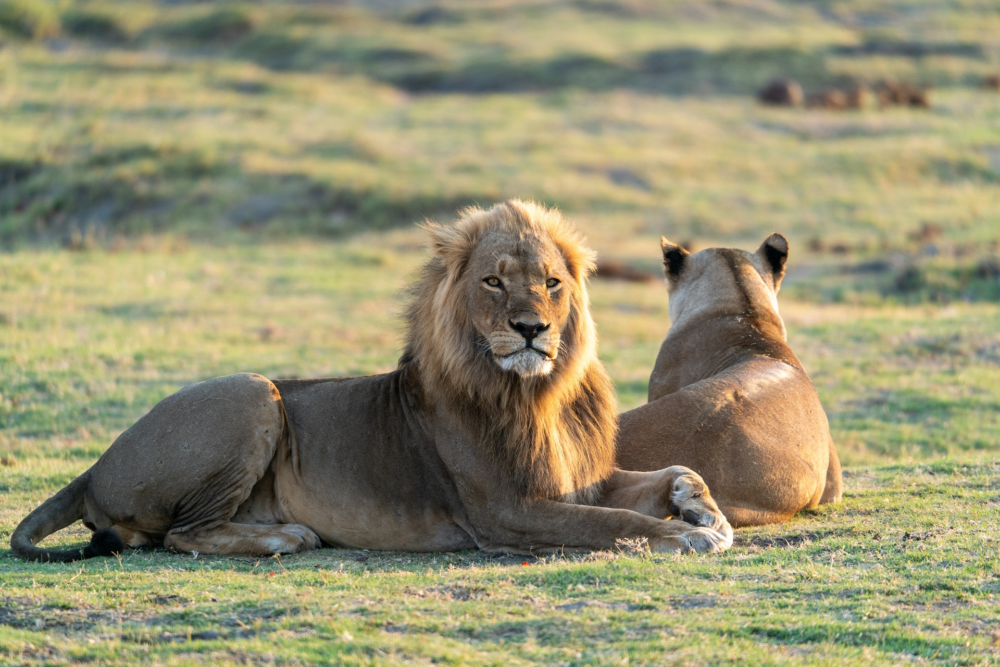
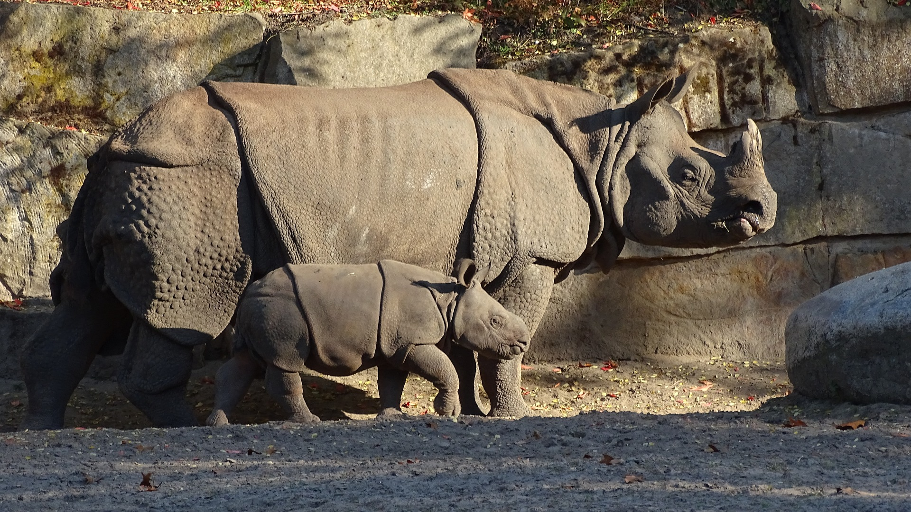

El panda rojo es una criatura solitaria que se encuentran en las montañas de Nepal, Myanmar y China central. El panda rojo es eclipsado por el gigante blanco y negro con el que comparte nombre. Suele ser del tamaño del gato doméstico, aunque su cola grande y espesa añade 46 centímetros a su cuerpo.
El león asiático se diferencia del africano por poseer un tamaño menor, una melena más corta y un largo pliegue de piel en el abdomen. Su pelaje es más espeso, tienen el penacho de la cola más largo y un mechón prominente en los codos.

Los elefantes asiáticos son más pequeños que sus primos africanos. Tienen orejas más pequeñas y la parte superior de su cabeza tiene dos cúpulas redondeadas. Los elefantes asiáticos tienen espaldas redondeadas y patas más cortas que los elefantes africanos y, en promedio, pesan 2.000 libras menos.
Mamífero de gran tamaño, puede medir más de tres metros de longitud y superar las dos toneladas de peso. Su piel, muy gruesa y de pliegues profundos, le da aspecto de animal “acorazado” y torpe. Sin embargo, se sabe que este rinoceronte es capaz de correr más de 50 km/h en tramos cortos.
